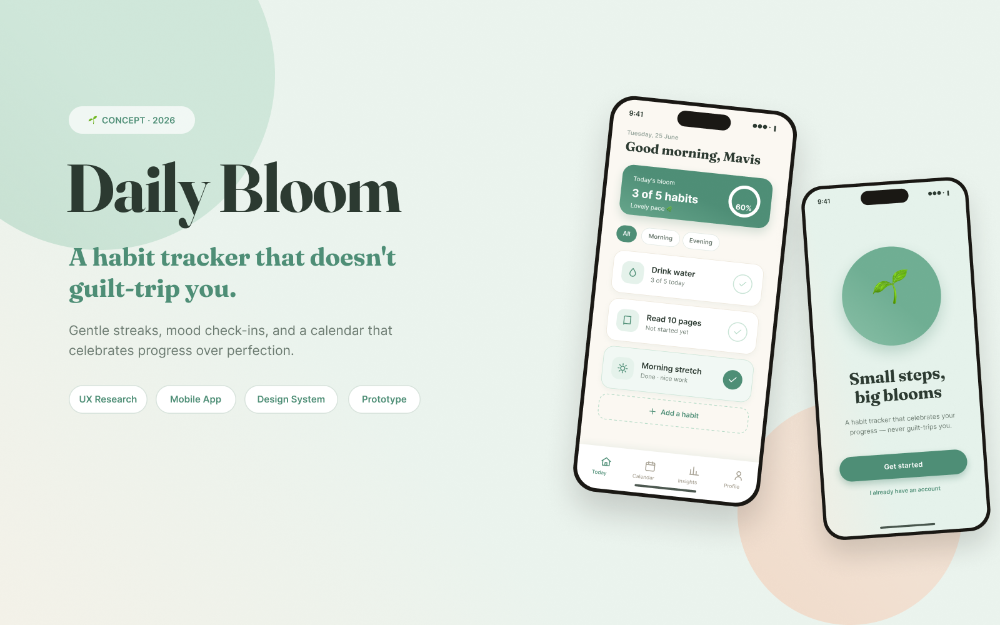
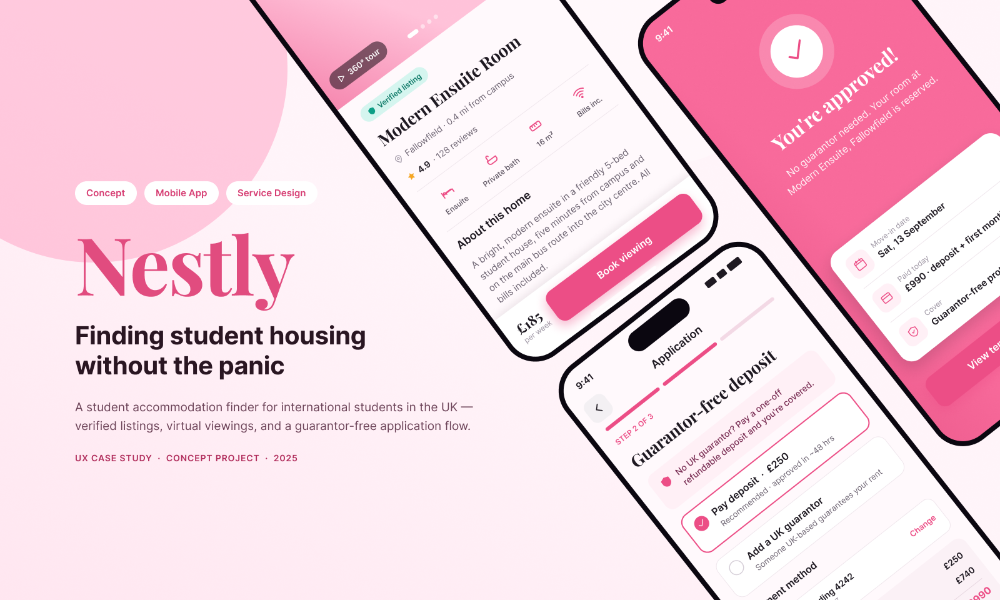
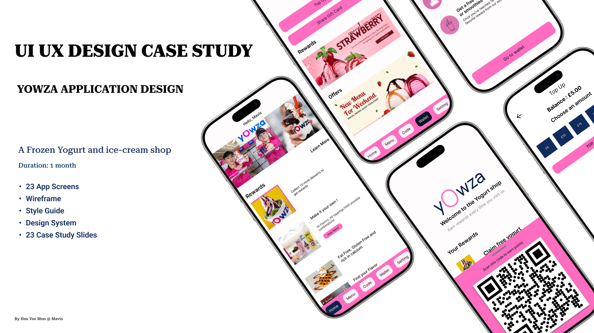
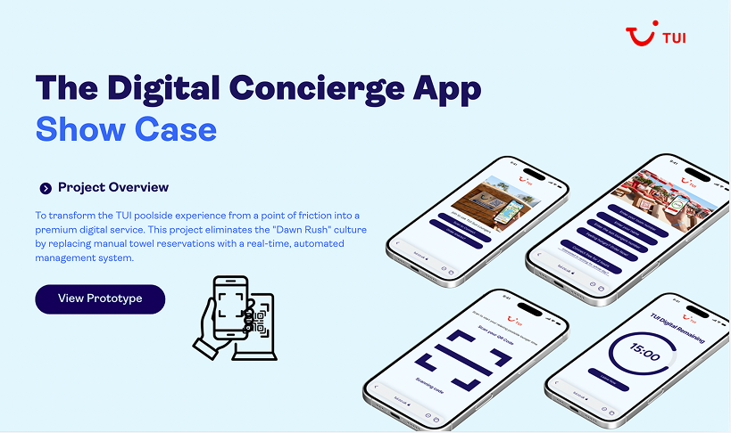
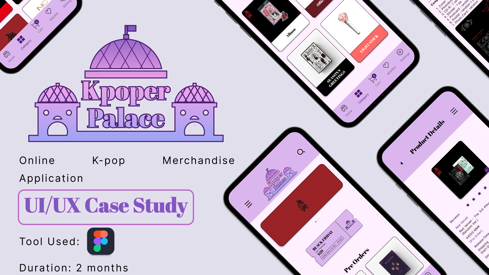
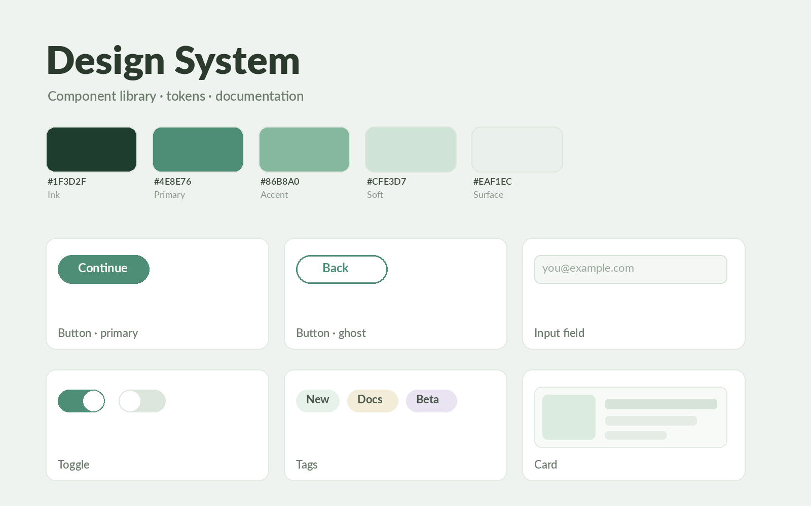
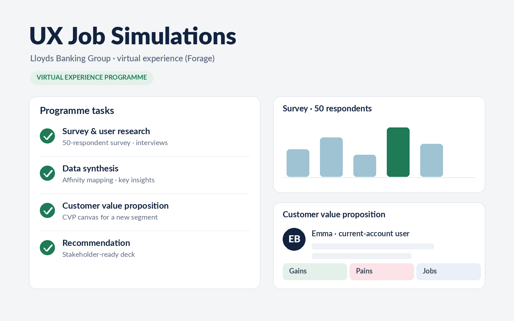

From client work and apprenticeships to self-initiated concepts — each project follows the same loop: research, define, design, test, refine.

Gentle streaks that pause instead of breaking, one-tap mood check-ins, and a calendar that rewards showing up — habit-building reframed around progress over perfection.
Read case study →
A student accommodation finder for international students in the UK — verified listings, virtual viewings, and a guarantor-free application flow.
Read case study →
20+ user interviews and in-store observation shaped a digital rewards app — plus a reusable design system that replaced outdated paper loyalty cards.
Read case study →
Turned a 12% guest-complaint rate into a digital service concept: a QR-based live lounger map with fair-use timers, backed by a phased rollout plan and £60k budget model.
Read case study →
Personas, storyboards, and journey maps exposed the pain of buying K-pop merch in Myanmar — solved with a prototype featuring secure checkout and photocard trading.
Read case study →
Audited component usage across a national design system, mapped user journeys, and improved component documentation adopted by designers and developers.
Read summary →
Two simulations with Lloyds’ UX team: 50-respondent surveys, ethnographic research, a customer value proposition, and a stakeholder-ready recommendation deck.
Read case study →I’m happy to walk through my process, files, and decisions.
Let’s talk